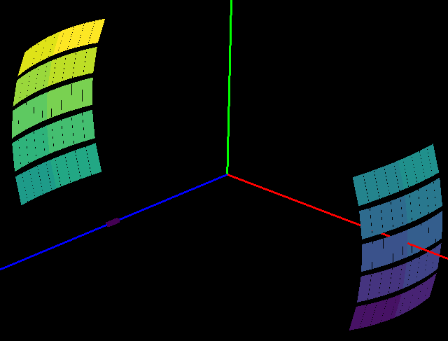

Diffraction Changes#
Powder Diffraction#
New features#
absorptioncorrutilsnow have the capability to calculate effective absorption correction (considering both absorption and multiple scattering).Extended MultipleScatteringCorrection to both the sample and container case.
Both MultipleScatteringCorrection and PaalmanPingsAbsorptionCorrection can use a different element size for container now.
Added a new input for sample height information from SNSPowderReduction to Powder Diffraction Reduction GUI.
StripVanadiumPeaks has 3 additional peak positions of 0.41192, 0.4279, 0.4907 angstroms.
Improvements#
Several improvements have been made to AnvredCorrection (and SphericalAbsorption which calls it)
the algorithm has been extended to evaluate the attenuation by more absorbing spherical (high muR) samples. Note - even with this change the calculation is still only accurate for muR < 8.
the algorithm will now take the radius of a spherical sample from the workspace if the radius isn’t specified. If the sample is not a sphere this will produce an error.
A number of improvements have been made to the CalculatePlaczekSelfScattering v1 algorithm.
The parameter
IncidentSpectrahas been renamed to fix a typo, which is a breaking change for this algorithm.The algorithm now validates that the
IncidentSpectrais in units of Wavelength and will output in the same unit as theInputWorkspace.The addition of 1 to the Placzek correction has been moved out of this algorithm and into TotScatCalculateSelfScattering .
D7AbsoluteCrossSections now supports cross-section separation, normalisation and proper unit setting, including conversion to S(Q, w), of D7 Time-of-flight mode data.
PEARL powder diffraction scripts now cope if
absorption correctionworkspace is a different size to theVanadiumworkspace without generatingNaNvalues.Improved the
tt_mode=Customin the ISIS PEARL powder diffraction scripts. Specificallytt_mode=Customnow supports all the differentfocus_modesif the grouping file contains 14 groups.FitPeaks and PDCalibration no longer fit masked bins (bins with zero error).
PolDiffILLReduction now supports data reduction of D7 Time-of-flight mode, including elastic peak calibration, time-dependent background subtraction, detector-analyser energy efficiency correction, and frame-overlap correction.
SNSPowderReduction now has an option to manually specify sample geometry for absorption correction.
TotScatCalculateSelfScattering now groups the correction by detector bank in
MomentumTransfer(rather thanTOF).
Bugfixes#
Identification in AlignComponents of the first and last
detector-IDfor an instrument component with unsorted detector-ID’s as the smallest and largestdetector-IDvalues.Fixed a bug such that attenuation calculated in AnvredCorrection is now accurate to within 0.5% for typical muR.
Restored behavior in ConvertUnits where negative
TOFconverts to negatived-SpacingwhenDIFA==0.LoadPDFgetNFile now returns standard units for atomic distance rather than the label.
The integration range has been corrected inside PDFFourierTransform v2.
SaveFocusedXYE now correctly writes all spectra to a single file when
SplitFilesisFalse. Previously it wrote only a single spectrum.Added an option to enable (default on) finding the sample environment automatically using SetSampleFromLogs. This is used to turn off the feature for vanadium measurements when using
mantid.utils.absorptioncorrutils.Fixed an issue in WANDPowderReduction where in some cases users ended up with zeros as output.
Fixed a problem with the
create_vanadiumaction when running withtt_mode=Customin the ISIS PEARL powder diffraction scripts. Created a separate Vanadium file for each different custom grouping file rather than one for all custom runs
Deprecation#
GetDetOffsetsMultiPeaks, which is deprecate since v6.2.0, is removed.CalibrateRectangularDetectors, which is deprecate since v6.2.0, is removed.
Engineering Diffraction#
New features#
Now supports two texture grouping schemes:
Texture20(10 groups per bank, 20 in total) andTexture30(15 groups per bank, 30 in total) forENGIN-Xin the Engineering Diffraction interface . Note this involved changes to thebankIDlog values saved with focused data, so this means the UI will not load in previously focused.nxsfiles.

Improvements#
Speed improvements that have improved performance include
parallelisation when calibrating and focusing data into multiple groups in the Engineering Diffraction interface.
FilterEvents execution speed improved by 35% in some cases.
A number of improvements have been made to the Fitting tab of the Engineering Diffraction interface
Improved axes scaling in the plot
Automatically disabled zoom and pan when opening the fit browser (as they interfered with the interactive peak adding tool).
The plot is now made larger when undocked, unless the size of the overall interface has been expanded significantly
The tab has been made more tolerant to users deleting or renaming the workspaces in the workbench Workspaces widget.
Updated the default values for EnggEstimateFocussedBackground and in the fitting tab table to
Niter = 50andXWindow = { 600 for TOF, 0.02 for d-Spacing }.The file filter in the Focus tab for calibration Region includes
No Region Filter,North,Southand now alsoCropped,Custom,TextureandBoth Banks. The text forNo Unit/Region Filteris colored grey.
Bugfixes#
Save
.prmfile from Calibration tab with correct L2 and two-theta for each group in arbitrary groupings (previously only correct for the twoENGIN-Xbanks).The last calibration file (
.prm) populated in the Calibration tab is now correct when both banks are focused (previously was populated with just the South bank.prm).Fixed a crash on Fitting tab when trying to output fit results. The problem was caused by a unit conversion from
TOFtod-Spacingnot being possible e.g. when peak centre at a negativeTOFvalue.The
SerialandSequentialfit features on the Fitting tab now respect theSubtract BGcheckbox in the table and use the background subtracted workspace where this is checked.
Single Crystal Diffraction#
New features#
Added a new option
CommonUBForAllto FindUBUsingIndexedPeaks to allow selection of the calculation handling multiple runs. This is the same as IndexPeaks.PolDiffILLReduction and D7AbsoluteCrossSections can now reduce and properly normalise single-crystal data for the D7 ILL instrument.
Enabled SCDCalibratePanels to optionally calibrate each detector bank’s size if it is a rectagular detector.
Bugfixes#
ConvertWANDSCDtoQ and ConvertQtoHKLMDHisto units now display correctly in terms of
in X.XXX A^-1.ConvertQtoHKLMDHisto output orientation fixed.
Fixed calculation of modulation vector uncertainty in FindUBUsingIndexedPeaks .
SaveReflections now scales intensities and errors to ensure the width of the columns in the output file are not exceeded.